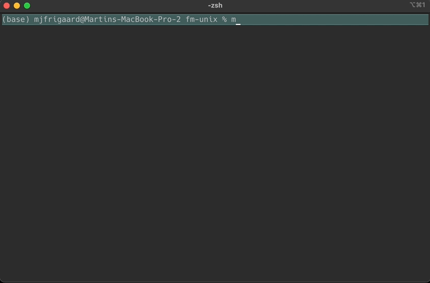
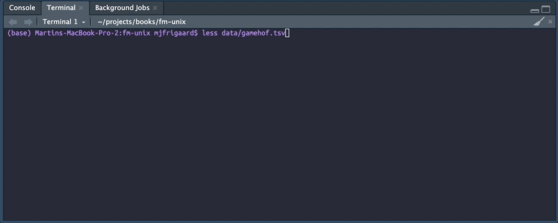

touch data/who_tb_data.tsvFiles
The following commands are designed for creating, managing, and manipulating files. Some of these commands will also work on directories (which we covered in the previous chapter).
Create
touch can create new files or update the timestamp of an existing file.
touch
We’ll start by creating a new file (data/who_tb_data.tsv) with touch:
We can confirm the new who_tb_data.tsv file was created, we’ll use the tree command to check the data folder:
tree -P who_tb_data.tsv data
# data
# └── who_tb_data.tsv
#
# 1 directory, 1 fileThe -P option lets us specify a pattern to search for in the data folder, which we’ll cover more in Symbols & Patterns.
echo
We can add some contents to the data/who_tb_data.tsv file using echo and the > operator.1
echo "country year type count
Afghanistan 1999 cases 745
Afghanistan 1999 population 19987071
Afghanistan 2000 cases 2666
Afghanistan 2000 population 20595360
Brazil 1999 cases 37737
Brazil 1999 population 172006362
Brazil 2000 cases 80488
Brazil 2000 population 174504898
China 1999 cases 212258
China 1999 population 1272915272
China 2000 cases 213766
China 2000 population 1280428583" > data/who_tb_data.tsvView
cat concatenates and displays file contents. We can use this to view the entire data/who_tb_data.tsv file we just created:
cat
cat data/who_tb_data.tsv
# country year type count
# Afghanistan 1999 cases 745
# Afghanistan 1999 population 19987071
# Afghanistan 2000 cases 2666
# Afghanistan 2000 population 20595360
# Brazil 1999 cases 37737
# Brazil 1999 population 172006362
# Brazil 2000 cases 80488
# Brazil 2000 population 174504898
# China 1999 cases 212258
# China 1999 population 1272915272
# China 2000 cases 213766
# China 2000 population 1280428583more & less
less and more lets you skim through a file on your computer, moving forwards and backwards as you please. These commands are helpful for larger files, like the Video Game Hall of Fame data stored in the data/vg_hof.tsv file:2
more data/vg_hof.tsv
more scrollless data/vg_hof.tsv
less scrollhead & tail
The head and tail commands let us view the tops and bottoms of files (the -n3 specifies three rows from data/vg_hof.tsv).
head -n3 data/vg_hof.tsv
# year game developer year_released
# 2015 DOOM id Software 1993
# 2015 Pac-Man Namco 1980tail -n3 data/vg_hof.tsv
# 2024 Tony Hawk's Pro Skater Neversoft 1999
# 2024 Ultima Richard Garriott, Origin Systems 1981
# 2024 You Don't Know Jack Jellyvision 1995Look
These commands can help you search for files (and directories).
grep
grep searches files for lines matching a pattern. We’ll use it to search for a specfic video game title in data/vg_hof.tsv:
grep "The Oregon Trail" data/vg_hof.tsv
# 2015 The Oregon Trail Don Rawitsch, Bill Heinemann, and Paul Dillenberger 1971
# 2016 The Oregon Trail Don Rawitsch, Bill Heinemann, and Paul Dillenberger 1971find is used to search for files and directories in a directory hierarchy based on various criteria such as name, size, file type, and modification time.
find
The .psv extension is used for pipe-separated files (|). We’ll use find to locate any .psv files in data/:
find data -name "*.psv"
# data/wu_tang.psvfind can be very specific, too. For example, the commands below look in the data directory for tab-delimited files (i.e., with a .tsv extension modified in the last day.
find data -name "*.tsv" -mtime -1
# data/who_tb_data.tsvlocate
locate finds files by name quickly using a database.3
locate who_tb_data data | head -n3
# /Users/mjfrigaard/projects/books/fm-unix/data/who_tb_data.csv
# /Users/mjfrigaard/projects/books/fm-unix/data/who_tb_data.psv
# /Users/mjfrigaard/projects/books/fm-unix/data/who_tb_data.tsvManage
The commands below can be used for copying, moving, renaming, and creating links to files.
cp
Assume we want to create backups of the delimiter-separated data files in the data/ folder. We’ll store these backups in folders according the file extension.
First we’ll create folder for each type of delimiter (.csv, .tsv, and .psv):
mkdir data/csv
mkdir data/tsv
mkdir data/psvConfirm with tree -d
tree data -d
# data
# ├── csv
# ├── psv
# └── tsv
#
# 4 directoriesThen we’ll copy the files into their respective folder (based their extension) using * and cp:
cp data/*.csv data/csv/tree data/csv/
# data/csv/
# ├── pwrds.csv
# └── wu_tang.csv
#
# 1 directory, 2 filescp data/*.tsv data/tsv/tree data/tsv/
# data/tsv/
# ├── music_vids.tsv
# ├── pwrds.tsv
# ├── trees.tsv
# ├── vg_hof.tsv
# ├── who_tb_data.tsv
# └── wu_tang.tsv
#
# 1 directory, 6 filescp data/*.psv data/psv/tree data/psv/
# data/psv/
# ├── who_tb_data.psv
# └── wu_tang.psv
#
# 1 directory, 2 filesmv
The commands below creates .psv and .csv versions of the who_tb_data.tsv file.
touch data/csv/who_tb_data.csv
echo "country,year,type,count
Afghanistan,1999,cases,745
Afghanistan,1999,population,19987071
Afghanistan,2000,cases,2666
Afghanistan,2000,population,20595360
Brazil,1999,cases,37737
Brazil,1999,population,172006362
Brazil,2000,cases,80488
Brazil,2000,population,174504898
China,1999,cases,212258
China,1999,population,1272915272
China,2000,cases,213766
China,2000,population,1280428583" > data/csv/who_tb_data.csv
touch data/who_tb_data.psv
echo "| country | year | type | count |
|-------------|------|------------|------------|
| Afghanistan | 1999 | cases | 745 |
| Afghanistan | 1999 | population | 19987071 |
| Afghanistan | 2000 | cases | 2666 |
| Afghanistan | 2000 | population | 20595360 |
| Brazil | 1999 | cases | 37737 |
| Brazil | 1999 | population | 172006362 |
| Brazil | 2000 | cases | 80488 |
| Brazil | 2000 | population | 174504898 |
| China | 1999 | cases | 212258 |
| China | 1999 | population | 1272915272 |
| China | 2000 | cases | 213766 |
| China | 2000 | population | 1280428583 |" > data/who_tb_data.psvOops–it looks like the who_tb_data.psv file was created in the data folder! (and not the data/psv folder). 4
tree data -L 2 -P '*who_tb_data.psv|*who_tb_data.csv'
# data
# ├── csv
# │ └── who_tb_data.csv
# ├── psv
# ├── tsv
# └── who_tb_data.psv
#
# 4 directories, 2 filesWe’ll use mv to move the who_tb_data.psv and data/who_tb_data.psv files into data/psv/ and confirm with tree:5
mv data/who_tb_data.psv data/psv/who_tb_data.psvtree data/psv
# data/psv
# ├── who_tb_data.psv
# └── wu_tang.psv
#
# 1 directory, 2 filesln
ln is used to create links between files. It can create two types of links: hard links and symbolic (or soft) links.
A hard link is an additional name for an existing file on the same file system, and is effectively an additional directory entry for the file.
A symbolic link (often called a symlink) is a file that points to another file or directory, and it contains a path to another entry somewhere in the file system.
With the ln command, you need to specify the target file first (the original file) and then the name of the new link:
ln original_file.txt new_link.txtWe’ll use ln to create data/who_tb_data.psv, a hard link for the data file in data/psv/who_tb_data.psv:
ln data/psv/who_tb_data.psv data/who_tb_data.psvIf we check the data folder with tree, we see the new who_tb_data.psv file looks identical to the other files:
tree data -P '*.psv'
# data
# ├── csv
# ├── psv
# │ ├── who_tb_data.psv
# │ └── wu_tang.psv
# ├── tsv
# ├── who_tb_data.psv
# └── wu_tang.psv
#
# 4 directories, 4 filesHard links are basically copies–changes made to one will reflect in the other since they both refer to the same data.
Now we’ll use ln -s to create data/who_tb_data.csv, a symlink for the data file in data/csv/who_tb_data.csv.
ln -s csv/who_tb_data.csv data/who_tb_data.csvWhen we look at the folder with tree now, we see the symlink is listed with a special pointer (->) to the original file:
tree data -P '*.csv'
# data
# ├── csv
# │ ├── pwrds.csv
# │ ├── who_tb_data.csv
# │ └── wu_tang.csv
# ├── psv
# ├── pwrds.csv
# ├── tsv
# ├── who_tb_data.csv -> data/csv/who_tb_data.csv
# └── wu_tang.csv
#
# 4 directories, 6 filesThe symbolic link only references the actual file, but doesn’t store the data itself.
Info
The commands below return different types of information from a files (or files).
ls
The ls command lists the contents of a directory. Adding -l returns the contents in a detailed long format, showing information such as file permissions, number of links, owner, group, file size, and last modification date for each item.
We’ll use ls -l on the hardlink we created and it’s original file:
ls -l data/who_tb_data.psv
# -rw-r--r--@ 2 username staff 686 May 7 11:01 data/who_tb_data.psv
ls -l data/psv/who_tb_data.psv
# -rw-r--r--@ 2 username staff 686 May 7 11:01 data/psv/who_tb_data.psvCompare this to the symlink we created with it’s original file:
ls -l data/who_tb_data.csv
# lrwxr-xr-x@ 1 username staff 19 May 7 10:56 data/who_tb_data.csv -> csv/who_tb_data.csv
ls -l data/csv/who_tb_data.csv
# -rw-r--r--@ 1 username staff 381 May 7 11:01 data/csv/who_tb_data.csvWe’ll cover this output more in the Permissions and Ownership section below, but here is a quick summary:
Both ls -l commands return similar information for the who_tb_data.psv files, indicating these aren’t treated as two separate files, but rather two paths to the same file. The @ 2 indicates this file has two hard links, meaning who_tb_data.psv is physically located in one place but can be accessed from two locations: data/who_tb_data.psv and data/psv/who_tb_data.psv.
The ls -l output for data/who_tb_data.csv (the symlink) returns lrwxr-xr-x@ (file permissions for a symbolic link) and includes @ 1, indicating a single hard link (symbolic links always have one link).
diff
diff compare the contents of two files line-by-line. We’ll use diff to compare the pipe-separated values file (data/wu_tang.psv) to the comma-separated separated values file (data/wu_tang.csv)
diff data/wu_tang.psv data/wu_tang.csv# 1,11c1,11The first line of the output indicates that lines 1 through 11 in the first file (data/wu_tang.psv) have been changed compared to lines 1 through 11 in the second file (data/wu_tang.csv).
Lines starting with < indicate the content from the first file (data/wu_tang.psv). These entries are separated by pipes or spaces (as commonly used in PSV files).
< |Member |Name |
< |RZA |Robert Diggs |
< |GZA |Gary Grice |
< |Method Man |Clifford Smith |
< |Raekwon the Chef |Corey Woods |
< |Ghostface Killah |Dennis Coles |
< |Inspectah Deck |Jason Hunter |
< |U-God |Lamont Hawkins |
< |Masta Killa |Jamel Irief |
< |Cappadonna |Darryl Hill |
< |Ol Dirty Bastard |Russell Tyrone Jones |> Member,Name
> RZA,Robert Diggs
> GZA,Gary Grice
> Method Man,Clifford Smith
> Raekwon the Chef,Corey Woods
> Ghostface Killah,Dennis Coles
> Inspectah Deck,Jason Hunter
> U-God,Lamont Hawkins
> Masta Killa,Jamel Irief
> Cappadonna,Darryl Hill
> Ol Dirty Bastard,Russell Tyrone JonesLines starting with > show the content from the second file (data/wu_tang.csv). These entries are separated by commas, as is typical for CSV files.
There is no difference in the actual data (Member or Name)–both files contain the same information, so the primary difference is purely in the formatting of the data: the PSV (pipe-separated Values) file uses vertical bars (|) and spaces to separate data fields, whereas the CSV (comma-separated values) file uses commas (,).6
What happens when we compare the symlink (data/who_tb_data.csv) and it’s original file (data/csv/who_tb_data.csv) with diff?
diff data/who_tb_data.csv data/csv/who_tb_data.csvdiff returns nothing and doesn’t produce any output if there are no differences between the two files.
Deleting, moving, or renaming the original file does not affect the integrity of a hard link:
# remove original file
rm data/psv/who_tb_data.psv
# check hard link
cat data/who_tb_data.psv
# | country | year | type | count |
# |-------------|------|------------|------------|
# | Afghanistan | 1999 | cases | 745 |
# | Afghanistan | 1999 | population | 19987071 |
# | Afghanistan | 2000 | cases | 2666 |
# | Afghanistan | 2000 | population | 20595360 |
# | Brazil | 1999 | cases | 37737 |
# | Brazil | 1999 | population | 172006362 |
# | Brazil | 2000 | cases | 80488 |
# | Brazil | 2000 | population | 174504898 |
# | China | 1999 | cases | 212258 |
# | China | 1999 | population | 1272915272 |
# | China | 2000 | cases | 213766 |
# | China | 2000 | population | 1280428583 |However, if the original file for a symlink is deleted, moved, or renamed, the symbolic link breaks and typically becomes a ‘dangling’ link that points to a non-existent path.
file
file gives us a summary of what a file is or what it contains, like telling us what’s in data/who_tb_data.txt.
file data/who_tb_data.csv
# data/who_tb_data.csv: CSV textreadlink
readlink displays the target of a symbolic link.
readlink data/who_tb_data.csv
# csv/who_tb_data.csvThe -f option provides the target’s absolute path.
readlink -f data/who_tb_data.csv
# /Users/username/path/to/data/csv/who_tb_data.csvwc
wc (word count) counts the number of lines, words, and characters in the given input. If a file name is provided, it performs the count on the file; otherwise, it reads from the standard input.
wc data/who_tb_data.csv
# 13 13 381 data/who_tb_data.csvstat
stat displays detailed information about files.
stat data/who_tb_data.csv
# 16777221 317111083 lrwxr-xr-x 1 mjfrigaard staff 0 19 "May 7 11:29:49 2024" "May 7 11:29:49 2024" "May 7 11:29:49 2024" "May 7 11:29:49 2024" 4096 0 0 data/who_tb_data.csvstat -l data/who_tb_data.csv
# lrwxr-xr-x 1 mjfrigaard staff 19 May 7 11:29:49 2024 data/who_tb_data.csv -> csv/who_tb_data.csvdu
du estimates file space usage.
Permissions and Ownership
chmod changes file permissions, and chown changes file ownership.
data/who_tb_data.tsvcomes from the WHO global tuberculosis programme.↩︎data/vg_hof.tsvis the Video Game Hall of Fame data↩︎locatesometimes requires the search database is generated/updated. Read more here↩︎The
-L 2option tells tree to only look in the data folder (no subfolders) and-P '*who_tb_data.psv|*who_tb_data.csv'matches thewho_tb_data.psvor thewho_tb_data.csvfile.↩︎cpandmvalso work with directories.↩︎This type of difference is significant if the format impacts how data is parsed or used. For example, a software program expecting data in CSV format might not correctly parse a PSV file, and vice versa.↩︎